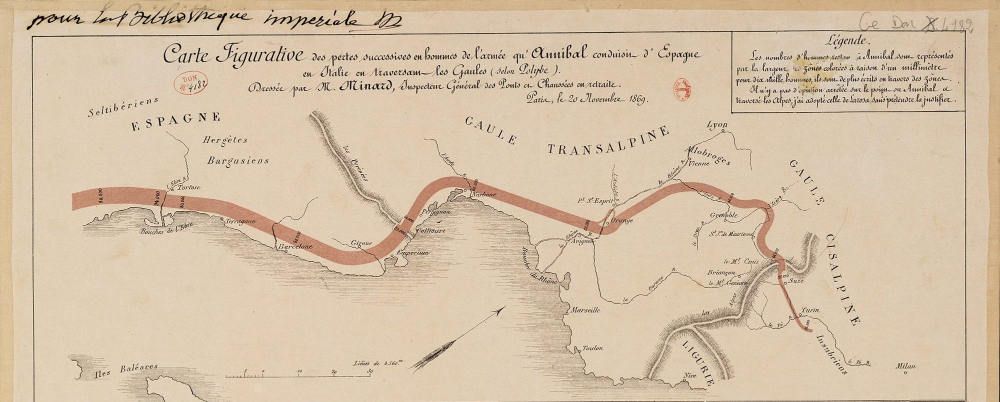
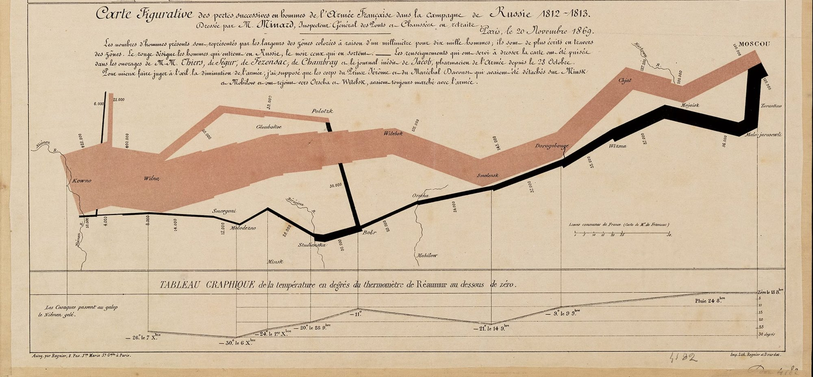

About
Thinking in graphs
Graphs are one of the most natural things we already think in — a map, a family tree, a group chat, a subway line. Long before anyone called it graph theory, we were reading the world as things connected to other things. This site starts from that intuition and tries to carry it all the way into graph neural networks.


Six variables in one image — army size, direction, geography, temperature — read at a glance, no legend required. That's the whole case for graphs: they don't just store connections, they store meaning in the connections. A social graph isn't just who follows whom, it's a proxy for influence and reach. The web graph isn't just links, it's the reason search works at all — PageRank is, underneath everything, a very large graph algorithm wearing a business suit.
And yet graph neural networks have a reputation for being dense, notation-heavy, unapproachable — despite the fact that most of us already reason this way by default. Data scientists, engineers, PMs: everyone thinks in graphs constantly, we just don't always call it that. This site leans into that existing intuition instead of starting from the math.
The goal isn't just to explain the ideas — it's to walk through the decades of research that got us here, from the earliest spectral methods to today's graph transformers, so you're not only caught up but confident enough to go build something: an implementation, a paper, or just a more graph-shaped way of looking at your next ML problem.
← Back home